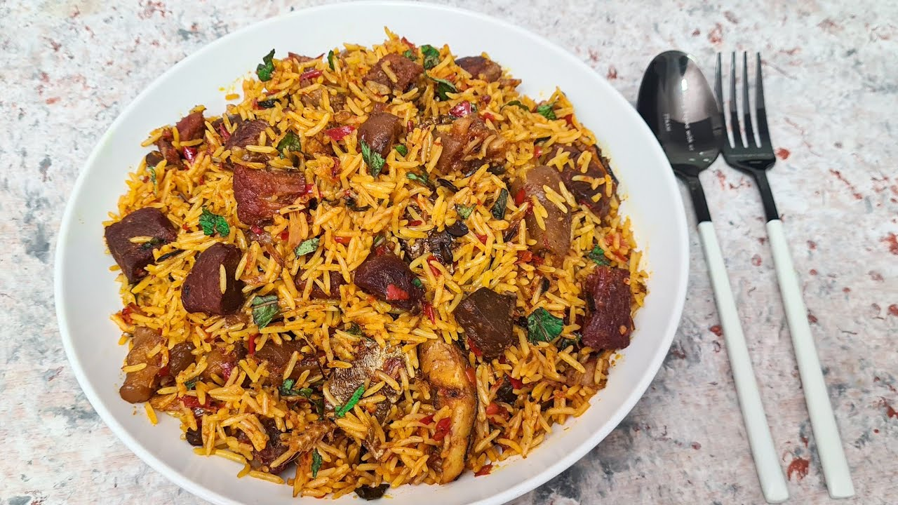

Native Rice
Preparation Time: 1 hour 30 minutes (Total), 30 minutes (Preparation), 1 hour (Cooking)
Ingredients:
- 2 cups long-grain parboiled rice
- 400g Banga (Palm Fruit) Extract
- 2 red bell peppers, chopped
- 1 onion, chopped
- Assorted meats (beef, goat meat, fish)
- 2 cloves garlic, minced
- 2 cups chopped spinach or bitter leaf
- 2 scotch bonnet peppers (atarodo), chopped
- 2 tablespoons ground crayfish
- 2 tablespoons ground uziza seeds (optional)
- Salt, to taste
Instructions:
- In a pot, combine the Banga extract with water and bring to a boil. Reduce heat and simmer for about 30 minutes to extract flavors.
- In another pot, heat palm oil and sauté chopped onions and minced garlic until fragrant.
- Add assorted meats and cook until browned.
- Stir in the chopped scotch bonnet peppers, ground crayfish, and ground uziza seeds (if using). Cook for another 5 minutes.
- Pour the simmered Banga extract into the pot with the meats. Add more water if needed to achieve desired consistency.
- Season with salt and simmer for about 30 minutes until the flavors meld together.
- Add the chopped spinach or bitter leaf and simmer for an additional 10 minutes.
- In a separate pot, cook the parboiled rice until fluffy.
- Serve the Native Rice hot with the Banga stew poured over it.
Fun Fact: Native Rice, also known as Banga Rice, is a traditional dish originating from the Niger Delta region of Nigeria. It is made with locally sourced ingredients, including Banga (Palm Fruit) extract, which gives the dish its distinctive flavor and rich red color.